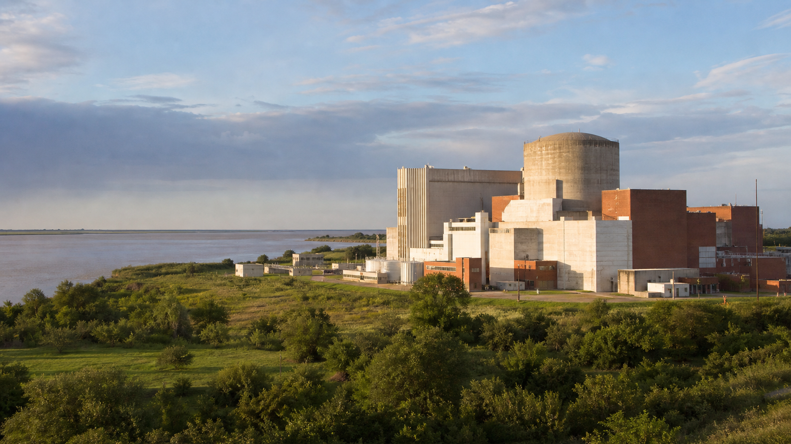

Los inicios (1950–1970)
La historia nuclear argentina comienza el 31 de mayo de 1950, cuando el presidente Juan Domingo Perón crea la Comisión Nacional de Energía Atómica (CNEA) mediante el Decreto 10.936. Detrás de esta decisión hubo una figura clave: el físico Enrique Gaviola, quien desde los años 40 venía insistiendo en la necesidad de que Argentina desarrollara capacidades propias en física nuclear, no como proveedor de materias primas sino como actor soberano de la ciencia atómica.
En 1955 se funda el Instituto de Física de Bariloche —que luego se convertiría en el legendario Instituto Balseiro— con el objetivo de formar físicos e ingenieros nucleares de excelencia. Ese mismo año, Argentina firma un acuerdo con Estados Unidos para el programa Átomos para la Paz.
El 20 de enero de 1958, el reactor RA-1 (Reactor Argentino 1) alcanzó la criticidad en Constituyentes. Fue el primer reactor de investigación del Hemisferio Sur. Diseñado y construido íntegramente en Argentina, el RA-1 marcó el nacimiento de la capacidad tecnológica nuclear nacional.
Durante la década de 1960, Argentina tomó una decisión estratégica que definiría su perfil nuclear: apostar por la línea del uranio natural con agua pesada (PHWR). A diferencia de la ruta del uranio enriquecido (que requería costosas plantas de enriquecimiento), el uranio natural —disponible en el país— combinado con agua pesada como moderador permitía un desarrollo autónomo. En 1968 comenzó la construcción de Atucha I en la localidad bonaerense de Lima, con tecnología de la empresa alemana Siemens.

Las centrales nucleares argentinas
Argentina cuenta hoy con tres centrales nucleares en operación que en conjunto generan alrededor del 7% de la electricidad nacional. Las tres son de tipo PHWR (reactor de agua pesada presurizada) y utilizan uranio natural como combustible y agua pesada como moderador y refrigerante.
Ubicada en Lima, provincia de Buenos Aires. Entró en operación comercial en 1974 con una potencia de 362 MWe. Fue la primera central nuclear de América Latina. Es un PHWR de recipiente de presión, diseño Siemens. En 2024 cumplió 50 años de operación y recibió la licencia para extender su vida útil.
Ubicada en Embalse, provincia de Córdoba. En operación desde 1984, 656 MWe de potencia. Es un reactor CANDU-6 de diseño canadiense, con tubos de presión horizontales. Tiene la capacidad única de recambio de combustible en línea: puede cambiar elementos combustibles sin detener la reacción. Tras su parada programada de reacondicionamiento (2015–2019), opera con todos sus componentes renovados para extender su vida por 30 años más.
Ubicada junto a Atucha I en Lima. Con 745 MWe, es la central más potente del país. Su construcción comenzó en 1981 pero quedó paralizada en los años 90 por restricciones presupuestarias. El proyecto se reactivó en 2006 y la central entró en operación comercial en 2014, con una participación nacional del 40% en su terminación.
Un eslabón fundamental de esta cadena es la Planta Industrial de Agua Pesada (PIAP) ubicada en Arroyito, Neuquén. Inaugurada en 1994, es una de las pocas instalaciones en el mundo capaces de producir agua pesada (D₂O) a escala industrial. Su capacidad de producción de 200 toneladas/año abastece a las tres centrales argentinas y permite exportar excedentes.
Producir agua pesada es muy costoso energéticamente: se necesitan procesar 40.000 litros de agua común para obtener un solo litro de D₂O. Por eso Argentina construyó la planta de Arroyito junto a la represa de El Chocón, aprovechando electricidad barata. Es un ejemplo de planificación estratégica a largo plazo.
El CAREM y la innovación
El CAREM (Central Argentina de Elementos Modulares) es probablemente el proyecto tecnológico más ambicioso de la historia argentina. Se trata del primer reactor nuclear de potencia diseñado íntegramente en Argentina. Su prototipo de 25 MWe se construye en el Complejo Nuclear Atucha, junto a Atucha I y II, en Lima.
El CAREM es un reactor PWR (agua presurizada) pero con un diseño integrado: los generadores de vapor están dentro del mismo recipiente de presión que el núcleo, eliminando cañerías externas y reduciendo drásticamente el riesgo de accidentes por pérdida de refrigerante. Incorpora seguridad pasiva: en caso de emergencia, la convección natural refrigera el núcleo sin necesidad de bombas, electricidad externa ni intervención humana.
Pensado como un Small Modular Reactor (SMR), el CAREM está diseñado para redes eléctricas pequeñas o medianas, para alimentar zonas alejadas de los grandes centros de consumo y para producir vapor industrial. Su construcción coloca a Argentina en el selecto grupo de países que diseñan sus propios reactores de potencia, junto a Estados Unidos, Rusia, China, Francia, Corea del Sur y Japón.
El CAREM es el primer reactor de potencia diseñado íntegramente en el hemisferio sur. Su diseño comenzó en 1984 dentro de CNEA, pasó por múltiples etapas de ingeniería, y la construcción del prototipo se inició formalmente en 2014. Cuando entre en criticidad, Argentina se convertirá en exportador de tecnología de reactores de potencia.
INVAP y los reactores de investigación
INVAP (Investigaciones Aplicadas Sociedad del Estado) es una empresa de tecnología con sede en San Carlos de Bariloche, propiedad de la provincia de Río Negro. Desde su creación en 1976, se ha convertido en un jugador de clase mundial en el diseño y exportación de reactores nucleares de investigación, además de desarrollar satélites y radares.
INVAP ha exportado reactores de investigación a múltiples países, un logro inédito para una empresa latinoamericana de tecnología:
- Australia — Reactor OPAL (Open Pool Australian Light-water), 20 MW, operativo desde 2007. Considerado uno de los mejores reactores multipropósito del mundo.
- Países Bajos — Reactor PALLAS, actualmente en construcción, reemplazará al histórico HFR de Petten.
- Egipto — Reactor ETRR-2 (22 MW), operativo desde 1998, utilizado para investigación y producción de radioisótopos.
- Arabia Saudita — Reactor de baja potencia para investigación y formación, suministrado en 2019.
- Brasil — Reactor Multipropósito Brasileño (RMB), en fase de diseño y construcción.
En el plano nacional, CNEA construye el RA-10, un reactor multipropósito de 30 MW en el Centro Atómico Ezeiza. Será una instalación de clase mundial que producirá Mo-99 para medicina nuclear, silicio dopado para la industria electrónica, y contará con haces de neutrones para investigación avanzada en materiales y biología.
INVAP no solo hace reactores: también construyó los satélites de observación terrestre SAOCOM 1A y 1B (en colaboración con CONAE), los satélites de telecomunicaciones ARSAT-1 y ARSAT-2, y desarrolla radares para el sistema de defensa y control de tránsito aéreo. La tecnología nuclear argentina es parte de un ecosistema de innovación mucho más amplio.
El reactor OPAL que INVAP construyó en Australia produce el 10% del Mo-99 mundial para medicina nuclear. Hubo una licitación internacional con competidores de Francia, Canadá y Alemania — y ganó INVAP. La tecnología argentina salva vidas en todo el planeta.
Formación y futuro
El sistema de formación de recursos humanos es la columna vertebral del programa nuclear argentino. El Instituto Balseiro (IB), en Bariloche, es una institución de referencia internacional: forma físicos e ingenieros nucleares con un régimen de dedicación exclusiva y beca completa para sus aproximadamente 60 ingresantes anuales. Su exigencia académica y su inserción en el Centro Atómico Bariloche lo convierten en un semillero de talento de primer nivel.
Complementan este ecosistema el Instituto Sabato (materiales, en colaboración con la UNSAM) y el Instituto Dan Beninson (tecnología nuclear, en colaboración con la UNSAM). La Autoridad Regulatoria Nuclear (ARN) garantiza la seguridad de todas las instalaciones de forma independiente, con un estándar reconocido internacionalmente.
CNEA articula todo el sistema: desde la minería del uranio (mina de Sierra Pintada en Mendoza, actualmente en proceso de reactivación), pasando por la purificación y conversión (Complejo Tecnológico Pilcaniyeu en Río Negro, donde Argentina domina el enriquecimiento por difusión gaseosa a escala piloto), la fabricación de combustibles (Planta Dioxitek en Córdoba, elementos combustibles en el Centro Atómico Ezeiza), la operación de centrales (Nucleoeléctrica Argentina S.A.), hasta la gestión de residuos radiactivos.
El futuro del sector nuclear argentino incluye la culminación del CAREM, la puesta en marcha del RA-10, la posible construcción de una cuarta central de potencia, la extensión de vida de las centrales existentes, y la consolidación de Argentina como exportador de tecnología nuclear. Detrás de todo esto hay una cadena de valor que involucra a cientos de PyMEs metalúrgicas, electrónicas y de ingeniería distribuidas en todo el país.
Más allá de los reactores, Argentina también desarrolla tecnología de aceleradores de partículas. El TANDAR (Tandem Argentino), en el Centro Atómico Constituyentes, es un acelerador electrostático de 20 MV —el más grande de América Latina— que desde 1985 se usa para investigación en física nuclear, análisis de materiales y estudios ambientales. Bajo el liderazgo del Dr. Andrés Kreiner (CNEA-CONICET), el TANDAR impulsa aplicaciones médicas como la BNCT, una terapia de precisión contra el cáncer en la que Argentina es pionera mundial. La CNEA y la UNSAM colaboran en el diseño de un acelerador compacto que podría llevar esta tecnología directamente a los hospitales.
El sector nuclear argentino emplea directa e indirectamente a más de 15.000 personas altamente calificadas. Por cada puesto en CNEA o Nucleoeléctrica, se generan entre 3 y 5 puestos en la cadena de proveedores. La industria nuclear es intensiva en conocimiento, genera empleo de calidad y tiene un efecto multiplicador sobre toda la economía.
Conceptos Clave
- ✦ CNEA (1950) impulsó un programa nuclear soberano. Argentina eligió la línea del uranio natural con agua pesada.
- ✦ Tres centrales operativas: Atucha I (362 MW, 1974), Embalse (656 MW, 1984), Atucha II (745 MW, 2014). Generan ~7% de la electricidad nacional.
- ✦ El CAREM es el primer PWR diseñado en Argentina. Diseño integrado con seguridad pasiva. En construcción en Lima.
- ✦ INVAP exporta reactores de investigación a Australia, Países Bajos, Egipto, Arabia Saudita y Brasil. También construye satélites.
- ✦ El Instituto Balseiro, Sabato y Beninson forman a las nuevas generaciones de científicos e ingenieros nucleares argentinos.
Temas Relacionados
El lugar de la nuclear dentro de la matriz energética del país
Reactores NuclearesCómo funcionan las máquinas que alimentan la red eléctrica
Aceleradores de PartículasEl TANDAR, los ciclotrones médicos y la BNCT argentina
AplicacionesMedicina nuclear, industria, agricultura y espacio